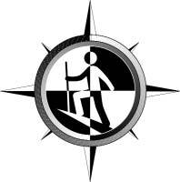
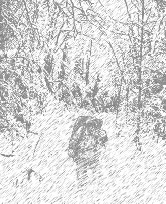
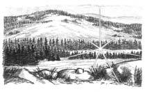
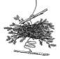
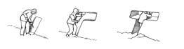
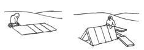
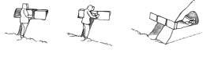
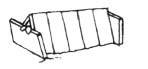
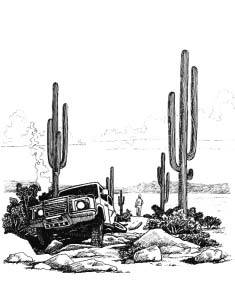

COLD WEATHER SURVIVAL
A Way of Life
The authors are grateful to Willamette Falls Hospital for permission to adapt the text of their
1993 publication for this edition.
by Frank Heyl with Harley Sachs
©2005 Frank Heyl & Harley Sachs.
All reprint rights reserved.
Published by Plant Deck Inc.,
15200 SW Twin Fir Road, Lake Oswego, OR 97035
Design and production provided by Gerber Legendary Blades®
Illustrations by Mark Boucher
COLD WEATHER SURVIVAL
A Way of Life
About the Authors
Frank Heyl is presently the principal instructor and director of the contact military survival training school.
Frank has authored “Staying Alive in the Arctic”, a cold weather training manual used by the petroleum and pipeline
Table of Contents companies working in Alaska and Canada. He has also supervised a Russian language edition of the manual for the
WHAT TO DO WHEN YOU ARE LOST............................3
training of oil field workers in Siberia.
YOUR SURVIVAL KITS
Keep in your pockets..........................................4
Frank is the coauthor of the following plant identification card decks; “Edible and Poisonous Plants of the Eastern
Carry in your daypack.........................................5
States”, Edible and Poisonous Plants of the Western States”
Carry in your vehicle...........................................6 and a Survival Card Deck giving survival tips. From these
First aid kit list..................................................6 three decks, the plant photography and survival tips are
WHAT YOU NEED TO SURVIVE
pictured on the U.S. Defense Mapping Agency maps for worldwide survival.
Stay healthy.....................................................7
Rescue Signals.................................................7
Harley L. Sachs is a retired professor of technical communication, an award-winning author of articles, essays,
Keep warm.......................................................9 newspaper columns and several books.
Step-by-Step Fire Building...............................11
Fire Building Tips............................................12
Acknowledgements
The authors are grateful to Willamette Falls Hospital for permission
Food and Water...............................................12 to adapt the text of their 1993 publication for this edition.
Shelter...........................................................15
©2005 Frank Heyl & Harley Sachs.
Quinzee......................................................16
All reprint rights reserved.
“T” Snow Cave............................................18
Published by Plant Deck Inc.,
15200 SW Twin Fir Road, Lake Oswego, OR 97035
Snowblock..................................................18
Cell phones and GPS.......................................19
Design and production provided by Gerber Legendary Blades®
Illustrations by Mark Boucher

Nobody plans to put themselves into a survival situation.
WHAT TO DO WHEN YOU ARE LOST
Such crises are always unexpected. The purpose of this booklet is to help you survive if such a crisis occurs. In
Avoid panic or letting such thoughts as “I’ve got to get order to survive you must know what to do, when and how out of here” cloud your judgment. While many have to do it and be able to do it in a variety of situations. The walked out in the past, the odds are against it. It could person who is in an all-out stay alive survival situation has be the last walk you will ever attempt.
only one goal: to survive and stay alive until rescue.
This booklet is adapted from one previously published by
Think. Before attempting to walk out, ask yourself the
Willamette Falls Hospital Foundation in conjunction with following questions:
the annual Cold Weather Survival and Wilderness
•
Will the weather, snow conditions, wind and
Medicine Conference.
visibility permit the walk? (Usually not)
•
Will the hours of remaining daylight permit you to reach help? (Probably not)
•
Is the clothing you have with you adequate for cold weather travel? (It rarely is)
•
Am I physically in condition for walking?
(You probably don’t know)
If you are not positive about all those questions, stay put. A little time spent evaluating your situation and applying survival sense to the problem will go a long way in assuring your health, comfort, and safety. It may save your life.
remember: When it does happen, admit you are lost.
Concentrate on survival. Your goal is to stay alive until you are rescued.
YOUR SURVIVAL KITS
Compass: Two compasses are better than one. Use the compass to orient the map to north.
Be prepared before you leave home. Some items you can carry in your pockets. Others fit in a day pack. Still others
Space blanket: This multi-purpose item can be used can be stowed in a car, boat, or small airplane.
in a variety of ways: as a poncho, a shelter, a ground cloth, a wind break, a rainwater collector or a fire
Keep in your pockets:
(heat) reflector.
This survival manual and a pencil.
Sun protection (includes sunglasses and sunscreen):
Knife: Can be used to build a fire or a shelter and
Many of the sunglasses on the market today are make signals for rescue. There are hundreds of uses designed more for style and fashion rather than for for knives, and two knives are better than one.
protection from the sun. Generally, glasses with dark
Matches: A box of Diamond Strike Anywhere brand gray-green lenses provide the best eye protection.
matches is recommended. By shortening them slightly
Wrap around sunglasses protect from side glare.
they can be kept dry in a plastic 35mm film
Signal equipment (signal mirror and signal whistle):
container. Include a strip of sandpaper for a striker.
A) A signal whistle can be heard five times farther
Fire starter: Candles are good fire starters. Rub candle away than the human voice. Blow three sharp blasts wax into a 4 x 4 inch patch cut from a cotton rag or on the whistle (Three blasts means “I need help.”)
handkerchief. Wax cloth burns continuously hotter and listen for an answer from the searchers, who will than a candle until consumed. Make up a number of respond with two sharp blasts.
wax fire starters with melted wax before you need
B) A signal mirror is a daylight line-of-sight signal them. Use a double boiler system (two cans: a small device that provides excellent ground-to-air signal can for the wax and a larger can for water). Dip the capabilities. Read the instructions and practice cotton cloth patches in the wax and let them cool.
signaling on a parked car (in your own driveway). Aim
Place patches in a plastic baggie to keep the wax for the red tail light. A signal mirror can also be used from getting on clothing.
to assist in the removal of foreign objects from the eyes.
Local map: Study it and get a visual idea of the terrain. Look for and memorize identifiable base lines,
10. First aid kit: See kit list on page 5.
such as a paved highway, a river, an electric power line, the ocean, etc.
Carry in your day pack:
A plastic leaf bag or garbage can liner: Makes a
All items listed in “Keep in your pockets”.
serviceable rain coat, equipment storage bag, ground cloth and water transpiration collector. (see page 16)
Clothing: Clothing protects you from the four killers:
wet, wind, cold and heat. Clothing is your portable
Water: In a large-mouth container that can be refilled shelter. Take spare clothing such as a sweater, with snow and thawed inside your jacket or sleeping polypropylene long underwear and socks.
bag.
Extra food and water: Jelly beans are a recommended
Keep in your car, boat, or small plane:
food source because they have a long shelf life, are
All items listed in “Keep in your pockets” and easy to carry, provide a varied diet, are nutritious and
“Carry in your day pack”
require a minimum amount of water to digest.
Long lasting candles, matches and a metal coffee can:
Flashlight (waterproof): Small AA or AAA cell
A candle burning in the bottom of a coffee can will flashlights with a halogen bulb are recommended.
serve as a heater in a stranded automobile or in a
After you buy the flashlight, be sure to test your makeshift shelter.
flashlight by immersing it in water for at least five
Blanket: The ideal blanket would be a wool or minutes.
wool blend.
Nylon cord: (approximately 50 feet): This can be used
First Aid Kit List:
for shelter construction, boot laces, gear, clothing
•
Water purification tablets: Titratable iodine – repair and much more. Parachute suspension line is to purify drinking water recommended because there are several core lines in each suspension line and each pulls out separately.
•
Band-Aid®: to bandage small wounds.
Use core lines for sewing and fish line.
•
Chap-Stick®: to protect lips from wind and sun.
Aluminum foil (heavy duty): Use as a surface for
•
Betadine® ointment: an antiseptic/germicide building a fire when the ground is very wet or covered to prevent infection in minor burns, cuts with snow. Fold with an edge up to use as a container and abrasions.
for boiling water or cooking.
•
Insect repellent: to prevent insect bites and stings.
•
Aspirin or Tylenol®: foil or plastic packets – for headache, fever or pain relief.
First Aid Kit (cont’d):
•
Kerlix® bandage (5-yard roll): for wrapping
WHAT YOU NEED TO SURVIVE
and covering large cuts.
Your survival plan includes five essential elements:
•
Extra-fine point forceps: for removing splinters
Stay healthy: To survive until you are rescued means and lifting ticks.
you must be in good physical and mental health.
•
Antiseptic towelettes: to clean minor scrapes
Protect yourself from the four killers (the wet, the and scratches.
wind, the cold and the heat). Keep yourself well•
3M™ Steri-Strip™ Elastic Skin Closures: to hydrated with pure water and try to prevent injuries to close small clean cuts.
yourself and others. Treat all injuries, no matter how
•
Elastic bandage or Ace® bandage: to support minor, promptly. If you disregard the medical aspects sprains of the wrist, elbow, knee or ankle – of survival, your chances could be considerably also for use a pressure bandage.
reduced.
•
Safety pins: to make a sling or hold a bandage
Rescue Signals: You must help people find you.
in place.
Emergency signals must (1) be seen or heard and (2)
•
Scrub soap in foil packet: for washing cuts, convey a message.
abrasions and any broken skin.
A) Fires provide warmth, comfort and will ward off
•
Needles (sewing type): for splinter removal.
cold injuries. It will also cook a meal, purify water
(boil for ten minutes) and dry your socks. And, while
•
Tape (plastic roll): to hold dressing in place.
these activities are occurring, the fire will bring
•
Combat Trauma Wrap (see page 27): To stop searchers to you. A fire actively burning with green bleeding, especially in extreme cold conditions.
foliage placed on it will put up a white smoke that
•
Personal medication: keep in a labeled can be seen for several miles. Oily rags or rubber waterproof container.
will put up black smoke, which is good in snow
•
Mole skin: for foot blisters.
country, but be sure to keep the fire under control.
An out-of-control wild fire can end a great survival
•
Packet of cotton-tipped applicators (Q-tips®):
story. A spare tire can be burned as a rescue signal.
for removal of foreign bodies from the corners
(See step-by-step fire building.)
of the eyes.



C) Signal mirrors: After radio communications, the signal mirror has accounted for more rescues than any other signal device. Commercial models, which are effective and have been known to send visible signals up to 20 statute miles, are available from outdoor equipment stores. A rear view mirror taken from an automobile is also effective, but is slower to use and not as accurate. It is essential to practice using the mirror, especially when using an
Smoke signal automobile or vanity-type mirror. Time will be of
B) An SOS stamped out in the snow and visible the essence in signaling a fast moving aircraft.
from the air has accounted for several rescues in
WARNING: Do not practice on aircraft in flight snow country. The rule of thumb with SOS letters or on other moving vehicles. It is a federal is that they should be no less than 3 feet wide by offense to falsely signal for rescue.
18 feet high.
S.O.S.
Signal mirror
D) Signal flares: All boats and airplanes are required or whiteout, but BEWARE! More people have died to carry signal flares, and highway flares are from carbon monoxide (the breath of death)
commonly carried in automobiles for emergencies.
poisoning in the cold than they have from freezing.
NOTE: Ground searches are only done in daylight.
When using your car as shelter, always open a window about one (1) inch on each side for
Keep Warm: Humans are tropical in nature and ventilation when the engine is running. If rain or to maintain good health, clear thinking and snow is blowing in the windows, close the window muscular control, you must keep warm. This is true on the windward side and roll down the leeward side in the desert, in the tropics, in the arctic, and in window two (2) inches.
temperate regions. Whenever and wherever the temperatures are below comfortable norms, and
Keep your coat, hat, gloves and other clothing on to when it is wet and windy, the body will begin to lose conserve body heat. Run the engine until the heat faster than it can produce it. While cold temperature in the car in comfortable and then turn injuries are not a problem in the tropics, dampness it off. Start the car again only when it begins to get and night cooling can seriously hamper survival uncomfortably cool. Remove snow from around the efforts. The desert environment presents the tail pipe frequently. If you know about how much problems of keeping cool during the day and warm fuel you have, you can figure out how many hours of at night. These temperature extremes can seriously heat you will have. A V-8 engine will burn menace comfort, health and survival. Temperate approximately one (1) gallon per hour at idle. A V-6 regions, the sub-arctic and the arctic present the engine will burn approximately.9 gallons per hour.
problems of hypothermia, frostbite and other cold
By running the engine for 15 minutes and turning it injuries. Even when protective cold weather clothing off for 15 minutes, you will double your comfortable is worn, prolonged exposure to the cold and heat time.
continued heat loss can cause cold injuries.
WARNING: Do not go to sleep while the engine is
Good health and heat from an external source will running. If you do, the silent killer, carbon monoxide, ward off cold-related problems. Heat from the sun will claim yet another victim. A simple heater for
(with clear skies) has a warming effect on the body.
inside your vehicle is a slow burning candle in the
If you are in an automobile and have available fuel, bottom of a coffee can. Votive or yahrzeit candles you can use the heater for warmth during a blizzard
(available in the ethnic foods section of your grocery)
will burn for 24 hours.
Long before your car runs out of fuel, it is wise to consider includes dry grass, cedar bark, pitch, foam rubber, the primitive provider of heat: Fire.
plastic utensils, pine needles and pine cones. To get tinder to burn hotter and longer, place the waxed
Step-by-Step Fire Building cotton cloth fire starter (described in the Ten
To assure success, fire building must be done step by
Essentials) under the tinder. Other good starters are step. Three things are required. (1) fuel, or a material for
Chap-Stick® and insect repellent.
burning, (2) oxygen, a colorless, odorless gas and (3) heat,
Gather kindling. Kindling must be small enough to a degree of hotness. Sources for starting a fire include ignite from the small flame of the fire starter and matches (wooden Strike Anywhere brand), a lighter, or a tinder. Gradually build up around tinder, teepee flint fire starter.
fashion, through the larger kindling until arriving at
A.
Select a safe site. Clear an 8’ diameter circle down the size of the fuel that is to be burned.
to mineral soil. Make sure all combustible materials
Fuel. Continue the teepee procedure with fuel until are removed from this circle. Build your fire in the two rows of fuel are in place. Examples of fuels center of the circle. Cut away any very low hanging include dead, dry limbs broken from trees and dry branches from directly over the fire site. Gather dung from plant eating animals. Consider anything tinder. Tinder must be finely shaved or shredded to that will burn. Rags soaked in engine oil can burn, provide a low combustion point and fluffed to allow too.
oxygen to flow freely through. Tinder includes dry
E.
Light the fire. Remove a wooden Strike Anywhere grass, cedar bark, pitch, foam rubber, plastic match from the waterproof container. Stand with utensils, pine needles and pine cones. To get tinder your back to the wind. Hunker down to the fire.
to burn hotter and longer, place the waxed cotton
Check to see if there is an opening at ground level cloth fire starter (described in the Ten Essentials)
in the teepee. If not, spread the fuel and kindling under the tinder. Other good starters are Chapstick® until you can see the waxed cloth fire starter and and insect repellent.
tinder. Strike the match and touch the flame to the
B.
Gather tinder. Tinder must be finely shaved or fire starter. Move to the side and let the wind carry shredded to provide a low combustion point, and the flame through the teepee.
fluffed to allow oxygen to flow freely through. Tinder

•
When two people are involved in fire building, both may do the gathering, but only one should do the building. The only help the builder should have is to be left to do the task alone. The other person should be gathering more fuel.
•
Dry building materials are essential. Look under fir, cedar, pine or other evergreen trees for small dead branches. These branches, which should be brittle and snap like a wooden match would if you broke it in two, can be turned into tinder and kindling. The larger ones can be used for fuel.
Fire
•
Always gather more fire building materials than you
Sounds simple doesn’t it? It is, with practice. Practice on think you will need, especially fuel, during daylight a wet, windy, cold day. Anyone can build a fire on a dry, hours. It will be a long night.
calm, warm day, but people usually don’t get lost on calm,
•
Place a tire a couple hundred feet downwind from the warm, dry days. And, if they do, they don’t need a fire to vehicle. Let the air out of the tire by making a small stay alive.
cut across the valve stem near the wheel. Failure to let the air out can result in a dangerous heat-induced
Fire Building Tips:
explosion. To insure a good fire start, shave small
•
Newspaper, paper towels, Kleenex or toilet tissue are slices of rubber from the tread. This is best done by not recommended. Paper draws dampness and has a wetting the knife blade with water (saliva and urine low burning temperature. It does not heat kindling will also work). If the ground is wet, place the rubber well enough for good combustion.
shavings on a piece of aluminum foil. Place the foil close to the upwind side of the tire and light the
•
Build a fire on dry ground. When dry ground is not shavings. Gather dry wood and keep it close by and available, use aluminum foil (see Essentials list).
ready to put on the tire as it burns down.
•
When building a fire on the snow, construct a platform of wood to raise the fire off the snow.

Food and Water: Without water a person may die in
Unfortunately, lost people do not realize they are a few days, but may live for a month without food.
becoming dehydrated, nor do they consider the
However, hunger is not a comfortable experience.
associated dangers. The lost person is frightened,
A small amount of food should be carried on every trip embarrassed and confused. Being lost or becoming into the back country. A good food choice is lightweight, involved in any outdoor emergency is the time for takes little water to digest, has a long shelf life and clear thinking and appropriate action. Neither is doesn’t melt from body heat. Jelly beans meet all of possible when the person is dehydrated. Dehydration these requirements. Most of us like a varied diet and also predisposes cold injuries, the most serious of jelly beans come in many delicious flavors. All food which are hypothermia and frost-bite. The smart requires water for digestion.
survivor will avoid these injuries at all costs. When water is in short supply or unavailable, the water
When water is in short supply, it is recommended that transpiration bag surpasses all other methods. All that you do not eat. Water is the most important substance is needed is a heavy duty clear or opaque plastic bag we consume. To safeguard good health and maximize and cord. As a water producer in dry, semi-dry or your survivability, sip water throughout the day. Carry a desert environments, it may take up to 3 bags to water supply with you and a supply of titratable iodine sustain one survivor. When selecting foliage to be water purification tablets. Otherwise, boil all water for bagged, sample a leaf for taste. All foliage will have ten minutes before drinking it. Do not eat snow as a their own taste and some may be bitter. Select one water substitute. It requires 12 eight-ounce glasses of snow to equal one eight—ounce glass of water. Eating you can stomach.
great amounts of snow over a period of time will lower
Water transpiration bag your body temperature and increase the risk of hypothermia and frostbite. Snow should be melted before consumption. This can be done in a container over a fire. In cold climates drink the water warm. In snow country carry a wide mouth plastic water bottle as a canteen (the one-quart size is best). As water is consumed, add more snow. The container is best hung on a cord around the neck. Place the container under the outer clothing. Body heat will melt the snow.
Water Transpiration Bag Instructions:
insulating layer of clothing between the skin and the foil inhibits cooling. Staying dry and keeping
•
Select broadleaf and woody bushes – not plants.
the cool air out increase your chances for
•
Additional leaves or foliage can be placed in survival.
the bag.
•
Make a tight seal at the bag opening.
Shelters you can build:
•
Anchor the bag by tying to a log or rock.
•
Place the bag where it will not be shaded from
Numerous people have survived a night in the worst the sun.
of weather by staying by a fire. Survival is the
•
CAUTION: DO NOT use poisonous/toxic plants in maintenance of body heat, but what happens if there transpiration bags.
are not materials available for building a fire? A shelter from the wet, wind and cold is mandatory.
Shelter: A water and windproof foil space blanket is a
The environment will dictate the type of shelter that shelter that weighs no more than four ounces, should be built. When above the tree line, in snow measures approximately 56” x 84” and can be carried country or on the arctic ice pack, snow becomes the in the pocket. It is credited with saving at least two shelter building material of choice. Always carry snow lives. These versatile blankets can be put to a number shelter building tools, an expedition snow shovel and of uses. A seat will be needed inside the shelter and saw, when in these areas.
can be constructed from a pack, a pile of fir boughs or any material that will insulate the person from the
Quinzees: The quinzee is a snow dome that can be wet or cold ground. While sitting on the pack with the constructed without deep or hard-packed snow. Its back to the wind, wrap the blanket (foil side next to dimensions, materials for construction and the body) over the head and around the body. Secure procedures follow. The size can vary, but a good size the blanket around the body with plastic camper’s to start with is a mound of snow about 6 feet high clothes-pins. These pins will secure the blanket and 12 feet in diameter; this is adequate for three or except in extremely windy conditions. The wrapfour campers. To construct a quinzee, you will need around shelter only offers protection from the wet and one pole about 8 feet long (this is the guide pole for wind and provides no insulation, so it is important to the center) and 30 or 40 sticks about 1 foot long dress appropriately. Do not let the blanket touch bare
(these are the gauge sticks for the thickness of the skin or it will rapidly rob the body of heat. An roof). You will also need a shovel.


Follow these steps to construct a quinzee:
gauge sticks 12” long center marker
Find a good area with lots of snow.
Lay out your location and place the center pole door plug vent in the snow.
Take the stout staff and stir the snow in your “quarry”
area. Stirring the snow breaks down the structure and helps it hold together. Stir an area of about 6 or
8 feet in diameter and then start piling this snow around the center post. Continue this procedure until you have a mound about 6 feet high and 12 feet in
Quinzee diameter. This takes quite awhile and is the easy part.
Place the stick with the
Let the mound settle. This usually takes an hour cord coiled, on the ground.
or two.
Pile evergreen boughs on
After the mound has settled, carefully put in your top of the stick and cord gauge sticks.
at least two feet high.
Now comes the moment of truth. You start to dig out
Reach down through the the entrance. A 24-inch thick hole is just about right.
center and pull the cord up
If the entrance remains firm, continue to scoop out through the boughs. Place the inside, using the gauge sticks to keep the a second stick on top of the
Door plug thickness to 1 foot. Change diggers often to avoid boughs and press down on overheating.
the pile firmly. Wrap the cord around the second stick
Pile the excavated snow around the entrance to form and tie it off. There should be several feet of cord a wind-break. Make a door plug using evergreen remaining. Set your door to the side of the doorway boughs. The door plug is made by tying a cord and pull the cord inside the quinzee. To close, pull approximately six feet long to the center if a stick the door plug to the center and into the doorway.
about an inch in diameter and a couple of feet long.
When boughs are scarce, a snow block will have to be used to close the doorway.




When you have finished the inside, be sure to make
Snowblock shelter:
vents (usually two or three work best). Let the shelter stay open so the snow will harden.
2. Set blocks using staggered
1. Cut blocks pattern, cover and chink cracks
After the shelter is hardened, you can move in.
Courtesy Sandy Bridges, Natural Boy Scout High Adventure Base; Ely, Minnesota.
"T" Snow cave shelter:
3. Cover entrance with blocks
1. Begin against
2. Crossways to entrance,
3. Downward about a slope then dig upward in all a foot directions leaving sleeping floor flat
Cell Phones and Global Positioning Systems (GPS)
There is certainly a place for electronic devices in the
4. Cut entrance
5. Fill cracks between
6. Cross-section of arsenal of survival equipment. However, do not trust your blocks and place blocks with snow completed shelter luck or your life on them. Always have back ups and know across entrance how to use the signaling tools on pages 7–10 and carry a magnetic compass. Cell phones and GPS operate best in open areas and high ground. High mountains under the forest canopy and being positioned in deep canyons can limit their effectiveness. If unable to transmit or receive, move to a more likely area if possible.

Electronic Device Tips:
A Word To The Wise
Cell phones, GPS and flashlight batteries are degraded
It has been estimated that more than 85% of the survival by age, normal use, moisture, corrosion and cold failures out there could have been prevented. The temperatures. Always start out with fresh batteries and survivor’s axiom – plan for the best, but prepare for the carry an extra set. Carry battery operated equipment in worst.
an inside pocket, close to your body to keep batteries warm and dry. Be certain that the area you are visiting is covered by your cell phone provider. Make a local check of your equipment at the trail head before leaving your vehicle.
NOTES: _______________________________________
Suppliers:
_____________________________________________
Combat Trauma Wrap:
Speedhook Specialties Inc.
_____________________________________________
P.O. Box 11215 - G
_____________________________________________
Merriville, IN 46411
Phone/FAX 1-877-SPDHOOK
_____________________________________________
_____________________________________________
Other first aid supplies can be found in most pharmacies and/or department stores.
_____________________________________________
_____________________________________________
_____________________________________________
_____________________________________________
_____________________________________________
_____________________________________________
_____________________________________________
_____________________________________________
_____________________________________________
_____________________________________________
_____________________________________________
_____________________________________________
_____________________________________________